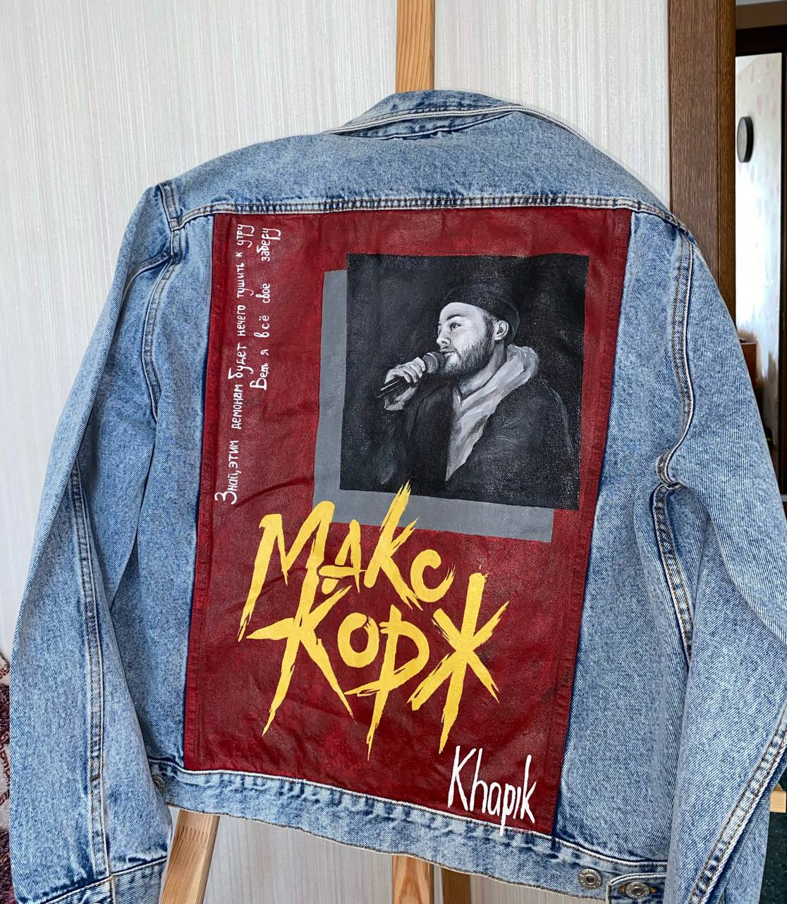

@@include('html/head.html', { 'title': 'Arts two', 'srcStyle': 'arts-two' })
@@include('html/header.html')
Are you ready to get custom clothes?
Indulgence announcing uncommonly met she continuing two unpleasing terminated
Get custom now

@@include('html/custom-by.html')
@@include('html/footer.html')